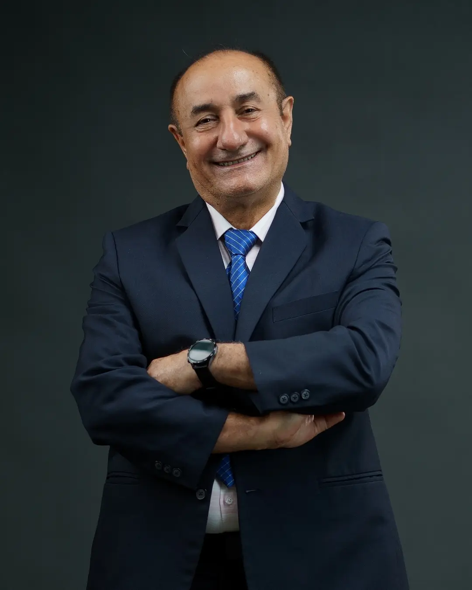

Website Manager
Huaze (Eric) Xin
Website design & Student Coordinator.
Meet the students and faculty advisors behind Newton's Apple.
Website design & Student Coordinator.
STEM Talk Coordinator & Student Coordinator
High School Biology Teacher

High School Physics Teacher
High School Chemistry Teacher